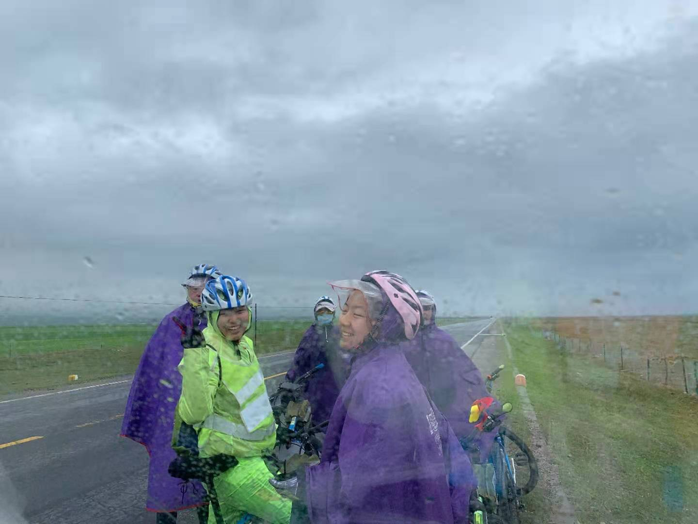
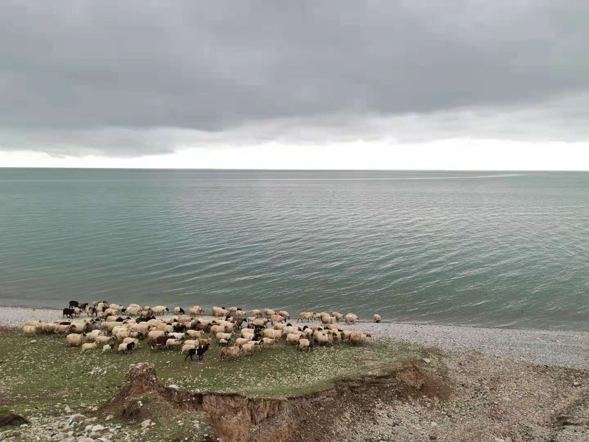
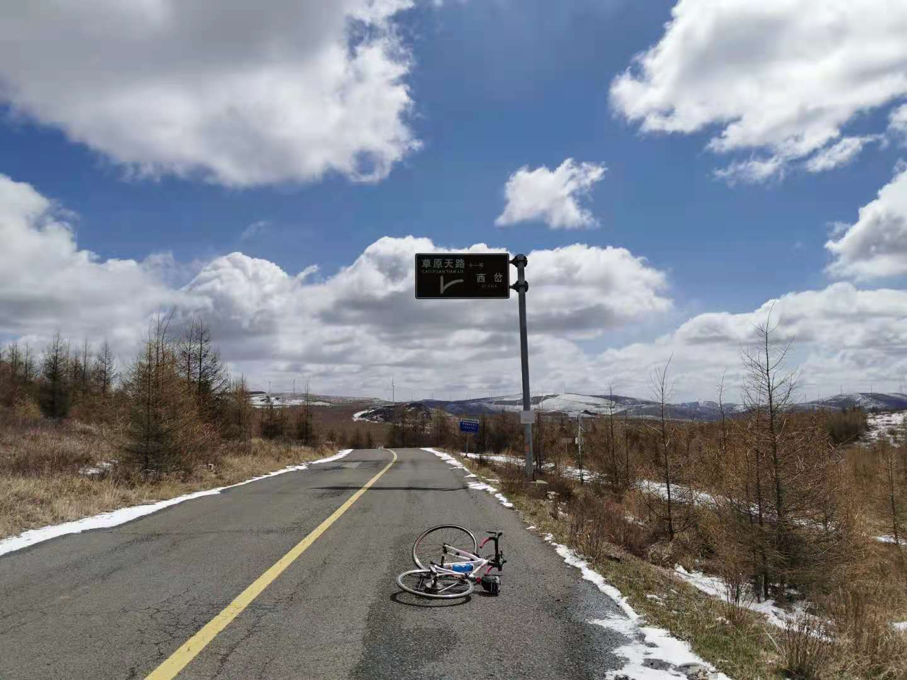
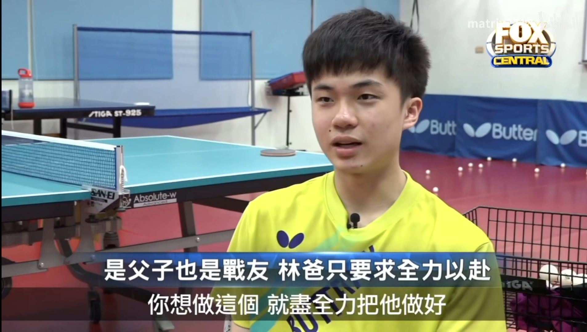
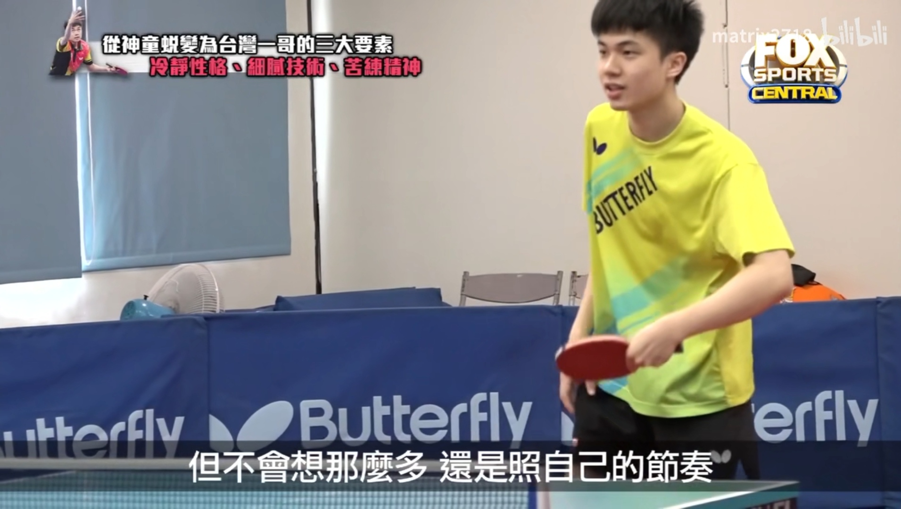
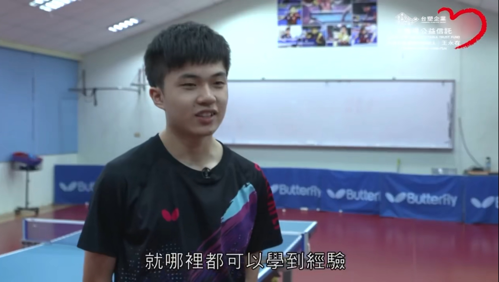
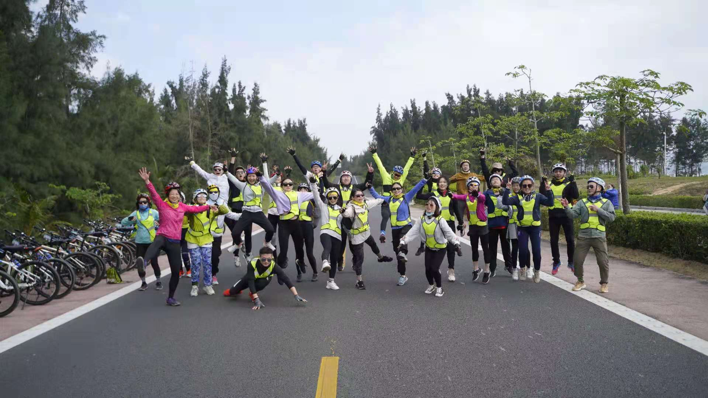

诶呀断断续续一年没有写作了，这一年感触良多，学业硬核程度顶峰，下半学期一度连续10小时盯屏幕眼睛疼；清华康奈尔双核运转，各时间的花式ddl惹人抓狂；在京骑了陆续10趟100公里+的行程，省外海南东线青海湖河北草原天路一路放飞心情；跑步在临走的关头突然记起，天天围着西湖绕圈圈，大圈小圈断桥岳王庙；重庆旅行，见车水马龙灯红酒绿；青川调研支教，认识了几个活力满满的小可爱大机灵鬼；最后几天疯狂淘宝买衣服，尝试不一样的清凉风格。跑完听着振奋的音乐漫步，心头浮上从未到来的释然和富足，春风和煦，精神明亮。
 从疫情袭来被迫回国，网课时差困扰不堪，到得知可以去清华交换喜出望外，满脑子幻想着“你好旧时光”，“最好的我们”这些错过的、难得的集体奋斗时光。因获得福，处在想中国一切的当口，去到最令人兴奋的清华学习。我深知到一个地方就会被一个地方浸染，不论是否是主人公。购得一辆永久自行车出入校园，游荡中关村北大街，准时捧着元气森林奶绿听每周讲座“宋明理学”，晚饭前饿着肚子听“C语言程序设计”的黄老师的侃侃而谈鼓励大家去做优秀有人性的程序猿，感受前排学霸的智商吊打，和德语小姐姐相约着德语Talk，参加早餐计划准时了两星期早起去桃李吃栗子糕…
全然按照自己的心愿而活，是一个漂泊大学生最珍贵的自由。
百团大战入坑骑行，泪洗上坡20公里共计110公里的妙峰山；街上看到武术社员混进你清武术社，参与一次小马杯开幕式耍剑表演；下学期加入撒爱扶贫协会，后边儿进行了两次线上授课和暑期青川支教；混进未来计算机社团，因此缘分听得“听君一席话，胜读10年书”的奇绩创坛陆奇博士的创业分享讲座，直接将我从阴郁的学习和压榨中抽离出来，立时获得如赵老师所言，陆九渊所说“收拾精神，自作主宰”，扫清一切邪魔的浩然之气；b站因缘关注的legal boys大王，大喧哥儿，郭律更是在谈笑风生中赋予我同样的专注于事，不困于人情，反客为主，自立根生的职场和日常能量。喜欢他们聊天的内容，桌上简洁的陈设，哪怕啤酒！这种风格只可意会，就是极其清爽有格调，有钱；学期间抽空看的“棋魂”剧中时光和俞亮–一时瑜亮，互相追赶，吵吵闹闹地成长，一同追求围棋的至高棋力和境界。此篇价值观丰富包容，一扫所有的郁郁不得志和见不得光，看完如同御赐小仵作与风起长林一样，令人心里豁达舒畅：
望尘莫及
有的人循规蹈矩；
有的人离经叛道；
有的人悬崖勒马，为自己下出乾坤逆转；
有的人却为别人做活一片青天；
有的人即便曲折，终会拨云见日；
还有的却无悔于人生；
有的人十年落拓，初衷不改；
还有的人志在远方，匠心不变；
有的人参透世间万物；
有的人悟尽人生几何；
有的人他为冠军而生；
还有的人会被众多人铭记；
有的人壶中藏日月；
有的人袖里能定乾坤；
有的人，春风桃李，俯首甘为火种；
有的人浪子回头，成为星河里最亮一颗；
有的人，高山流水，凌云揽胜，一生只为一盘棋；
而有的人，冥冥之中只为你而存在，正是上天，为你选中的对手。
不得不令人震惊，原著日漫棋魂当是具有怎样一种另外宏大的价值维度！映射到现实，我们3110 functional programming的final project就是写一个象棋软件，和清扬无时无刻连麦对线！当然学期初通过信号课认识了伯克利同学Aria，参加到舞蹈单元的每周身韵课，这课可是加重了我下学期的“学渣感”–不管在哪个场景，仿佛都是个学渣，骑车骑的累死，学编程学的肩疼，绕晕，学跳舞更别说，各种角度转圈圈翻腕拧拉，诗意原地晕倒，雾；plus一场“到那时”，“中歌汇演”和小璇儿及Aria赴一环天桥及国家大剧院观看；加上最后康奈尔放假完闭关24楼自习室的整整6天，写一个带来心理清凉的风车小程序，生活不可谓多姿多彩。
学业方面，数学和物理暂时可以打住，后头应当全身心投入计算机，当是需要某项数学或物理再专攻。上海人工智能大会了解到开源是一个很抓人的方向，Julia这个先我一步执着享受生活的姐姐也坚定地探索金融方向；行动方面，按陆奇博士和优秀到飞起的飞鱼所说，应该视“getting works done”为第一要务，不过分纠结枝节。这是一名优秀的engineer应当拥有的品质；运动方面，一定会为了身心健康和做更好的自己，穿插运动到生活的方方面面，用运动调动积极性和抗挫力，一生追求卓越，登峰造极。
海南的银色海浪阵阵袭来，波廊下阳光反射的金色椰影摇曳入心；青海湖湛蓝的胡边牛羊不紧不慢地过街，10多公里不见一个人的踪影，按爸爸的话说，天地有大美而不言；比完东京奥运会的林昀儒虽然错失男乒铜牌，但小将上场，意气风发，不可一世，那坚定的眼神已说明一切志向；没有人沉溺于过去的悲悯无法自拔，没有人因为挫折停滞不前，因为志向之远大，之光明，足以穿透所有阴霾。
  也是感谢赵老师，宋明理学所引申的，到底是约束天性还是释放天性之问，彻底引发了我的思考。是郭靖降服为主的降龙十八掌，还是杨过直抒胸臆的黯然销魂掌？以前一味顺从体制从未意识到另一条路的可行和精彩。最喜欢的角色——“琅琊榜风起长林”中的萧平旌，历经考验功业达到顶峰后抛下一切，黯然离场。三年前我惋惜他没有得到应有的荣誉和辉煌，三年后我庆幸，平旌走向了一片更加开阔的天地，走向未来肆意率性的人生。飞扬跳脱的底色没变，只是多了一份理性和见识。庙堂之高，不如江湖悠远~
少年不识爱恨，一生最心动。
愿历经风雨，找到自己，成为自己。
写至此处，才觉自己生活丰富至此，实是至幸。
原来我从不缺有趣的灵魂
原来我一直都是有趣的灵魂
–小遐客儿同Bella于杭州西西弗国大咖啡馆